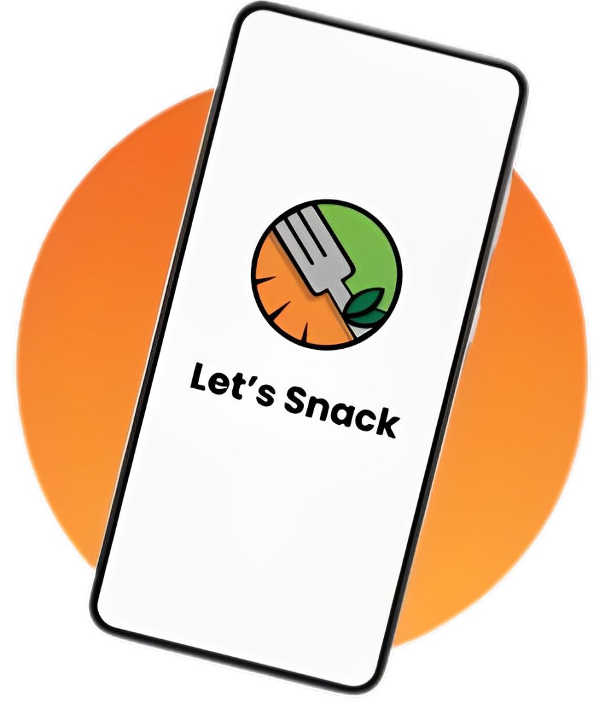

Esse aplicativo visa promover uma alimentação
mais saudável e equilibrada para as pessoas,
além de buscar as soluções favoráveis para
seus usuários.

O Let's Snack, criado em 2024 pela Socialment, apoia cidades e comunidades sustentáveis (ODS 11) e promove a Fome Zero e a Agricultura Sustentável (ODS 2.2). Nossa missão é resolver problemas alimentares como inclusão, conveniência, nutrição balanceada e personalização das refeições, oferecendo um ambiente centralizado, saudável e conveniente. Proporcionamos saúde, sabor e inclusão na palma da sua mão.
Let's Snack é um aplicativo desenvolvido para atender às necessidades de um público interessado não apenas em receitas saudáveis, mas também em entender como a alimentação pode impactar em suas emoções e bem-estar em geral. Tendo um foco em inclusão, conveniência e personalização, o app oferece uma maneira simples e prática de alcançar uma dieta balanceada e satisfatória. Fornecendo saúde, sabor e inclusão na palma da mão dos usuários.
